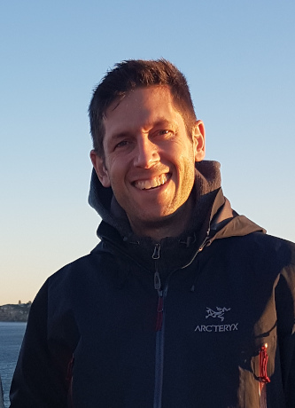

Andrew Frederick Cowie
rmc, BEng

Andrew Cowie is a long time Linux engineer, but—somewhat unusually—started his career as an infantry officer in the Canadian army, having graduated from Royal Military College, Kingston with a degree in engineering physics. He saw service across North America and a tour in the former Yugoslavia. He later ran operations for a mobile internet company in Manhattan and was a part of recovering the firm after the Sept 11 attacks.
Moving to Australia he founded a consulting form helping a worldwide clientèle on their operations management, specializing in planning and executing major upgrades to critical infrastructure. He also has significant experience helping startups solve difficult problems in uncertain and complex environments.
He later worked as head of engineering at a hosting company where designed and deployed a scalable infrastructure and established Haskell as the working language for all internal systems with a view to improving the calibre of software being developed. Moving into financial services, he was an engineering manager in the Systems Engineering group at Commonwealth Bank with accountability for operations and engineering on their Big Data™ analytics platform and later led the integration between containerized infrastructure and cyber security.
Andrew has recently joined innovative AI startup daisee as VP Engineering. Already successfully using Haskell to power their speech analysis system, Andrew is thrilled to be working with a talented team of engineers and data scientists on the challenge of scaling up as the company continues to grow.
On the technical side, Andrew is a strong open source advocate and contributed to the GNOME Desktop for many years. Past experience includes coding in C, Perl, and Java but for almost ten years now he has concentrated exclusively in Haskell and has experience both as a developer himself and in growing people to be able to use Haskell in team settings. Previous work emphasized reliable distributed systems; lately he has been focused on tools for engineers, developing publishing toolchains for building better technical documentation and is now doing some original work on a new domain specific language for procedures.
Andrew has experience as a corporate director, having served on the boards of international organizations promoting excellence, leadership, and innovation amongst youth; advocating Linux; and promoting Open Source professionals’ interests. Andrew has also been a frequent conference speaker, presenting about increasing the level of professionalism in the operations world and encouraging people to pursue the cause of freedom—in software and in the world beyond.